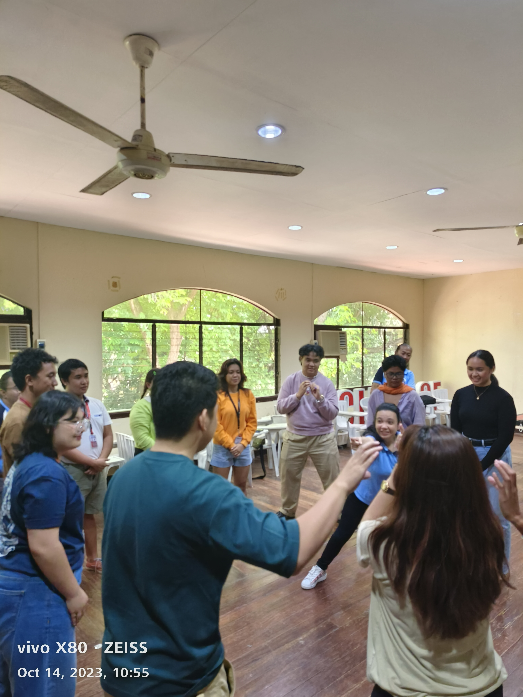
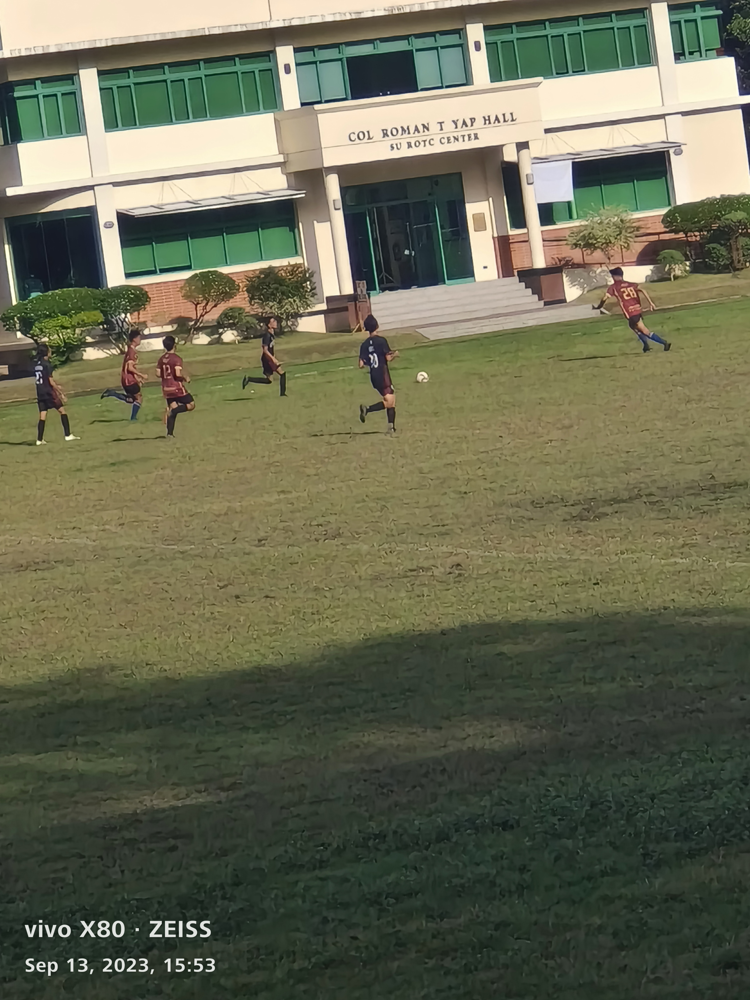
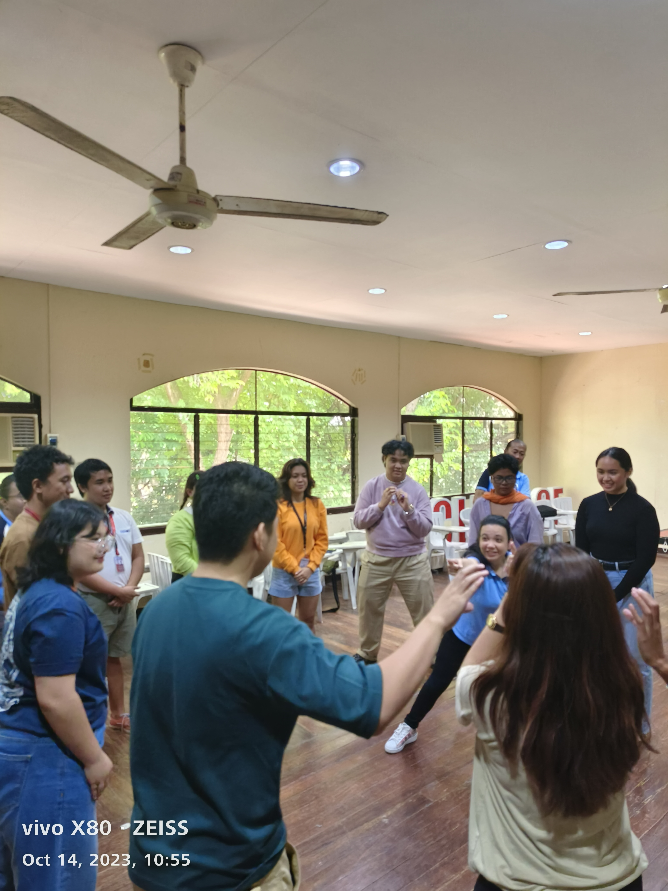
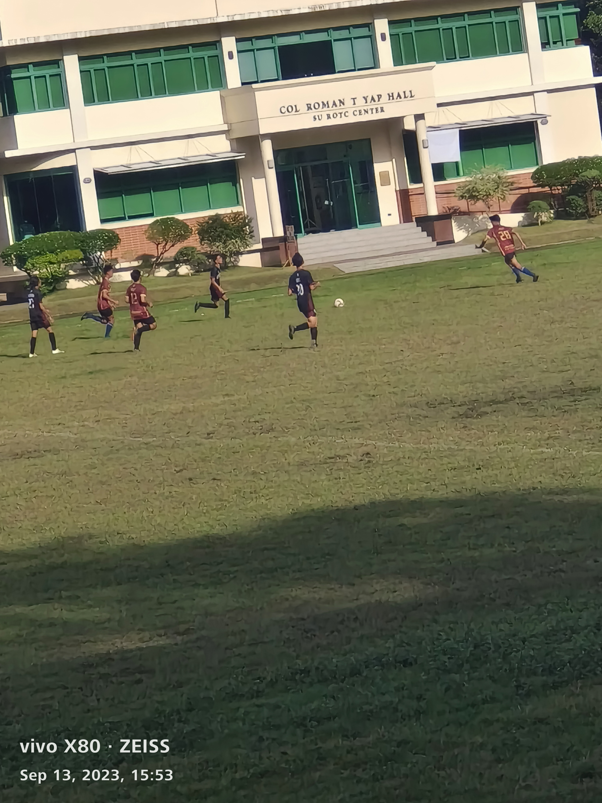
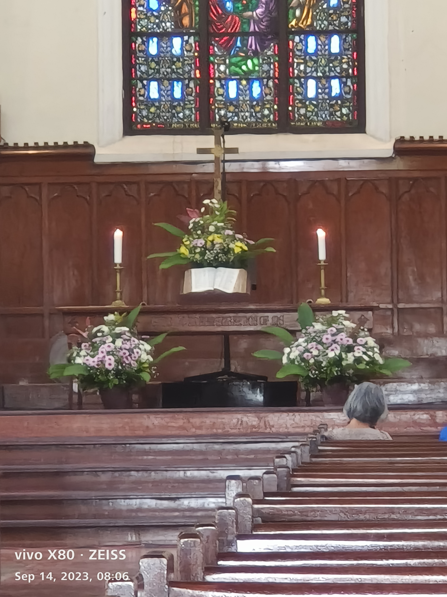
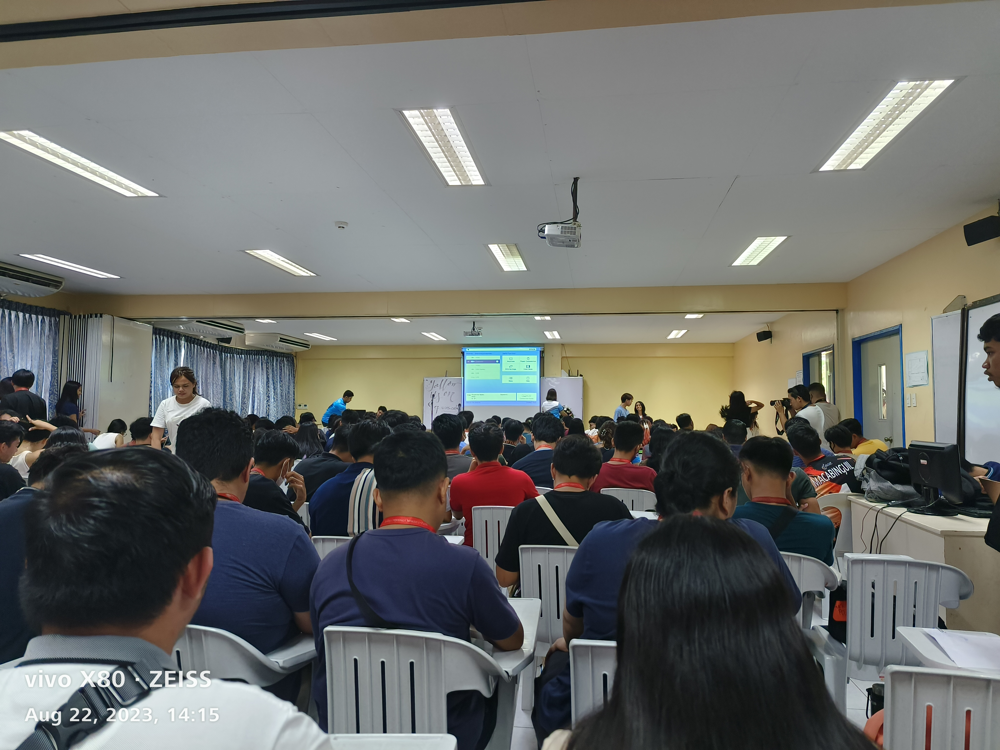

(1).png)


 







Made by: Baxter Bao-As GE10A-O © 2023
Welcome to my WPE Online Journal! where fun comes alive!
In this Online Journal, you'll be able to discover and view events that I've participated in and experienced that helped shape me as a person. This helps me live and practice the 5 Cs of Silliman University. In order to see these events per C, navigate through the buttons in the button widget above. If you wanna learn more about me, See "About Me", Hope you enjoy my online journal! Let the fun commence!
ABOUT ME